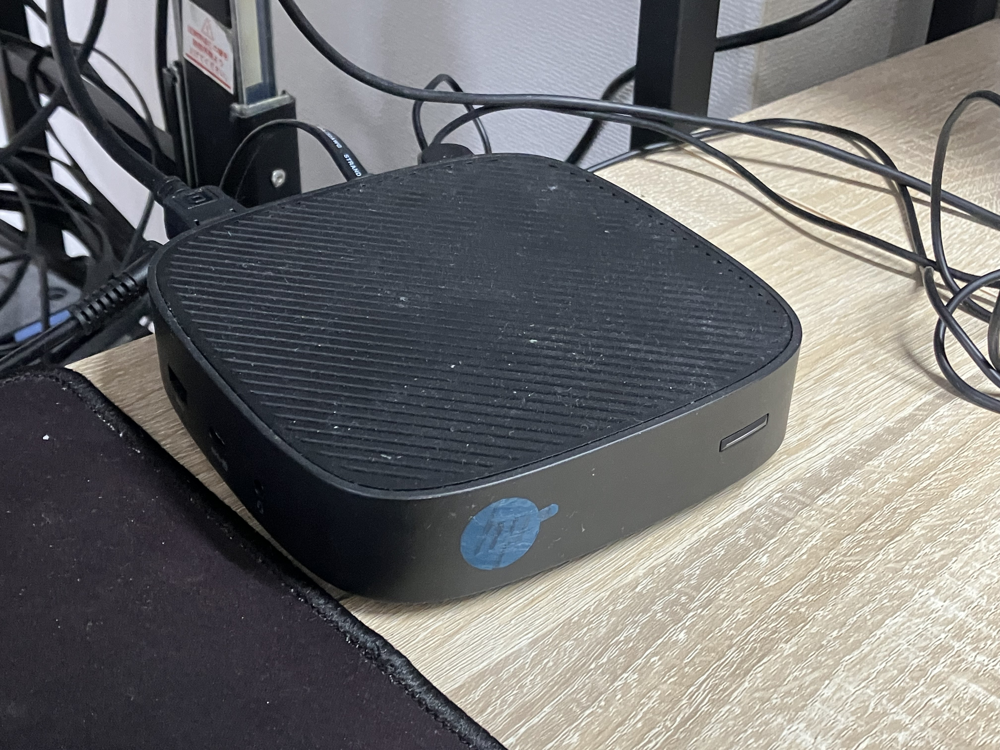

前々から自宅サーバーには興味があったので今回取り組むことにしました。
丹精込めて作りました。自慢の自宅webサーバーです。
~~~~~~~~~~~~~~~~~~~~~~~~~~~~~~~~~~~~~
CPU:intel N4000
RAM:2GB
SSD:16GB
OS:Lubuntu
とても刺激的で興味深いプロジェクトで楽しかった。
以前NASを構築した時よりも、深い知識を要求する作業だった。
今回の作業でプロバイダ、IPアドレス、ポート、LINUX、
その他諸々に対する理解が深まり、とても満足している。
今後は課題を解決しながらもっとよいwebページを作りたい。